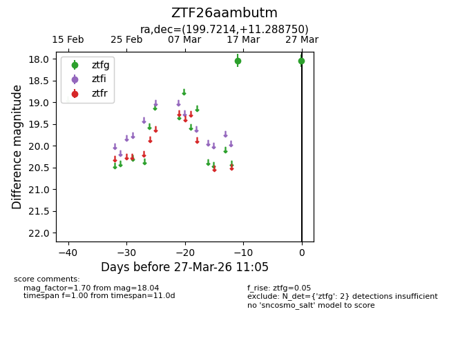
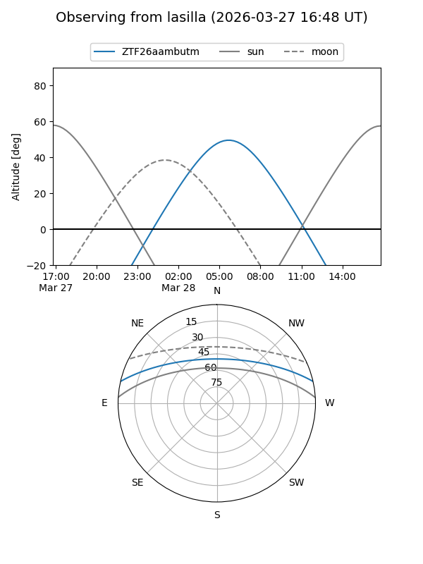
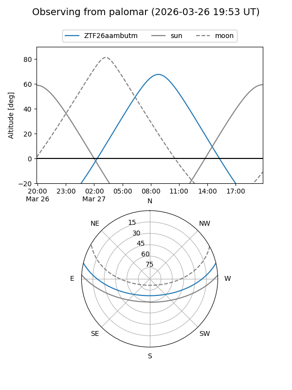

ZTF26aambutm
Target ZTF26aambutm at 2026-03-27 11:08
Aliases and brokers:
FINK: link
Lasair: link
ALeRCE: link
alt names
ZTF26aambutm (ztf,fink_ztf)
Coordinates:
equatorial (ra, dec) = 199.7214,+11.28875
equatorial (HMS+DMS) = 13:18:53.14,+11:17:19.50
galactic (l, b) = (326.4103,+72.89715)
Flags:
Photometry:
last ztfg=18.04
2 ztfg detections
Lightcurve

Visibility


Additional plots